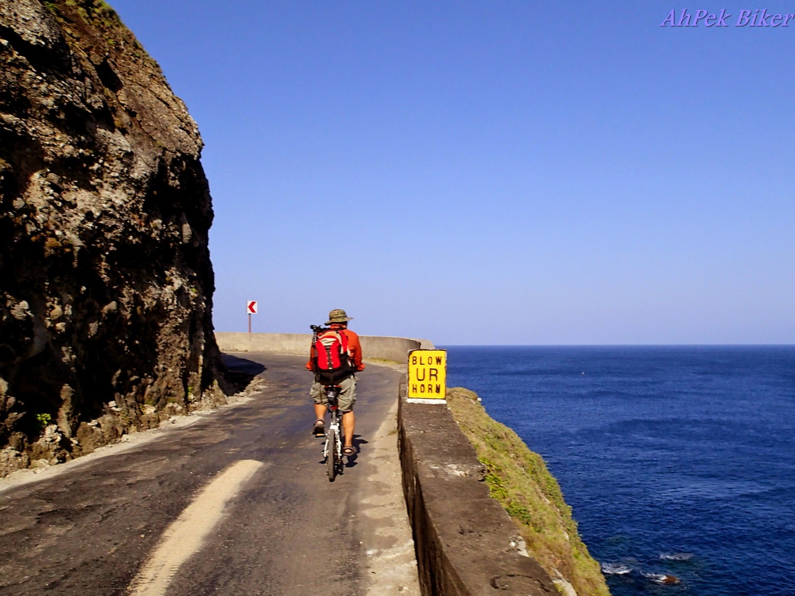
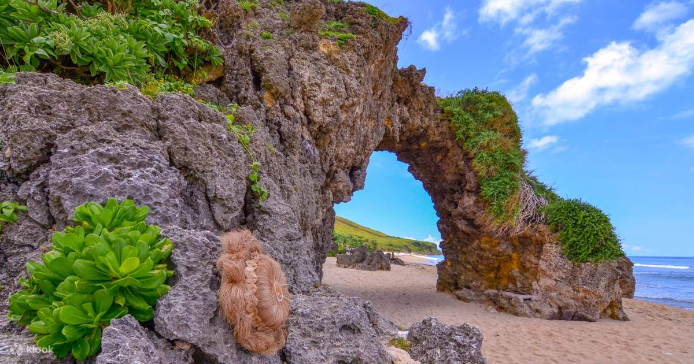
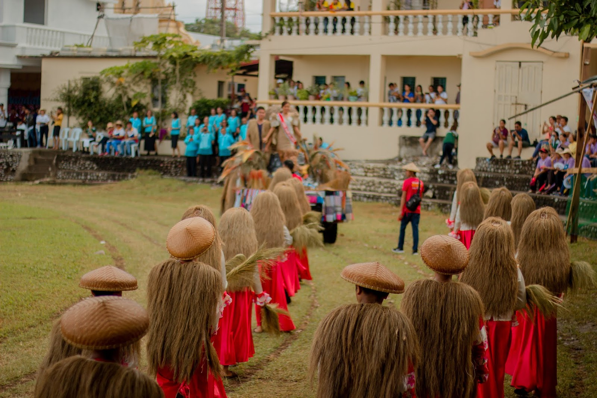

Explore Batanes Adventures
Mt. Iraya Hike

Embark on a challenging trek up Batanes' iconic dormant volcano, Mt. Iraya. The journey begins just beyond Basco Airport, leading you through dense forests teeming with unique flora and fauna. After approximately two hours, you'll reach the summit, offering panoramic views of the island and the West Philippine Sea. A permit from the DENR is required, and hiring a local guide is strongly recommended for safety.
Around Batan Bike Trail

Experience the scenic beauty of Batan Island on a 41-kilometer coastal bike loop. This trail starts from Basco and passes through Mahatao, Ivana, and Uyugan, featuring landmarks like Marlboro Hills and Tayid Lighthouse. With mostly paved roads and gentle slopes, it’s perfect for cycling enthusiasts of all levels.
Sabtang Island Excursion

Discover the rustic charm of Sabtang Island via a short boat ride from Batan. Explore traditional Ivatan villages like Savidug and Chavayan, relax on Morong Beach, and visit iconic sights such as Chamantad-Tinyan Viewpoint and the Sabtang Lighthouse.
Local Adventure Events

Immerse yourself in local culture through seasonal Ivatan festivals and outdoor group events. These gatherings offer a unique glimpse into Batanes' heritage and traditions.
Safety First
Stay safe during your adventure with emergency contacts, weather advisories, and essential gear checklists. Keep updated and prepared for any situation while exploring the outdoors.
Top Picks

Don't miss iconic spots such as Marlboro Hills, Vayang Rolling Hills, and Valugan Boulder Beach — each offering a unique scenic and cultural experience.